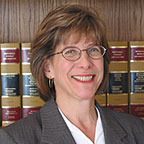

About Us
Judith Kammins Albietz
Judith Kammins Albietz specializes in mediation and negotiation for individuals, families, businesses, Indian tribes, and public agencies, such as water districts, cities and counties. Ms. Albietz' practice is focused on alternative dispute resolution for matters involving Estates and Trusts, Environmental Law, Federal Indian Law, Tribal Law and general business matters.
Ms. Albietz offers expertise in administrative law and public agency law at both the State and federal level -- utilizing her legal experience as well as extensive upper-management background with the federal government -- offering more than 35 years of experience in mediation, negotiation and consulting.
Ms. Albietz has represented private and public sector clients in complex multi-party dispute negotiation, including asset distribution, public land disputes, and water quality and water rights matters, such as the Putah Creek stream adjudication, where she represented the largest defendant group, 220 landowners.
Ms. Albietz received the Arthur S. Flemming Award, as "one of the top men and women in the federal government," for her work on behalf of Native corporations in conveying 22 million acres of land and addressing water, energy and other natural resource issues in the land transfer process. She appears before California courts, federal district courts, local agency boards, administrative law judges and Indian tribal courts, A recognized authority in the areas of water law and federal Indian law, Ms. Albietz has given presentations and workshops on the following topics:
- "Indian Water Rights and Settlement Negotiations" - a paper addressing the effectiveness of past and current water settlements apportioning water allocations between non-Indians and Indians in the Southwest for the Western Social Science Association 42nd Annual Conference, April 26-29, 2000
- General water law - water rights and water quality - for the continuing education programs of the California State Bar Association
- Endangered Species Act and the California Environmental Quality Act for the California State Bar Real Property subsection
- "Boundary Law and Related Real Property Law" for the National Business Institute
- "Federal Indian Law" for continuing education programs for the California State Bar
Prior Experience:
- Founding Partner, Albietz & Samuel and Albietz & Associates
- Diepenbrock, Wulff, Plant & Hannegan, Attorney
- Bureau of Land Management, California, Chief of Operations
- Bureau of Land Management, Alaska, Chief of the Division of Conveyances to Alaskan Natives and the State of Alaska
- Budget Examiner, Office of Management and Budget (OMB)
- Appointed to the Energy Analysis Unit for President Carter's Inter-Agency Task Force on the Environmental and Health Effects of Non-Nuclear Energy Development Technology
- OMB representative on the Indian Policy Inter-Agency Policy Task Force
- Environmental Protection Agency, Program Analyst and Management Intern
Education and Training:
- Negotiating & Facilitating Effective Environmental Agreements: CONCUR, 2007
- Advanced Mediation Training: Steven Rosenberg, 2007
- Mediation Training: Sacramento Mediation Center
- Admitted to California State Bar, 1989
- J.D. University of the Pacific, McGeorge School of Law, 1989
- M.A. University of Michigan, Public Administration, 1972
- B.S. University of Michigan, Honors in Sociology, 1970
Member:
- California State Bar
- American Bar Association
- Alameda County Bar Association
- Sacramento County Bar Association
- Sacramento County Superior Court: conservatorship appointments
- Alameda County Small Claims Court Mediation Program
- Sacramento County Superior Court
- Co-Chair, Sacramento Real Property Roundtable, CA State Bar, 1996-97
- Co-Chair Natural Resources Subsection, Real Property Section, CA State Bar, 1994-96
- California Nations Indian Gaming Association, Associate Member
- International Right of Way Association
- Point West Rotary, 1989-2000
General Business Law Experience:
- Estate and Trusts: Estate planning and trust formation; management and distribution of assets; trustee for individuals, County of Sacramento, and tribal members who are dependant minors or elders
- Employment contracts and disputes
- Real property matters, including land use and land title, licensing and permitting with local/State/federal entities, loan documents
- Partnership and corporate formation and dissolution; tribal economic development contract negotiation